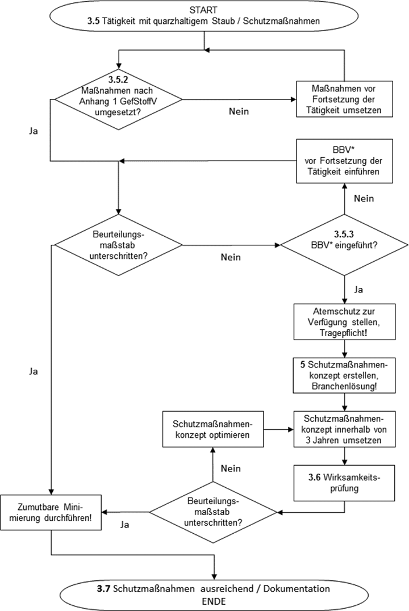

Anhang zu TRGS 559: Ablaufschema Festlegung von Schutzmaßnahmen

Das Schema visualisiert das in der TRGS 559 beschriebene Vorgehen. Zahlen in Fettdruck verweisen auf den jeweiligen TRGS-Abschnitt. *BBV = Branchenübliche Verfahrens- und Betriebsweisen